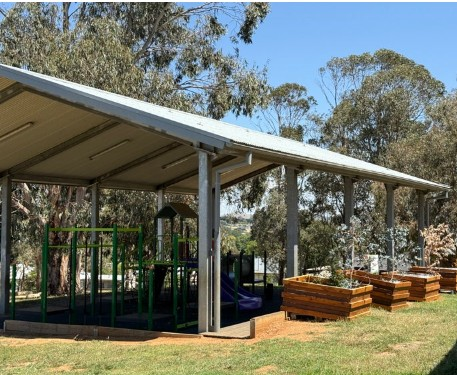
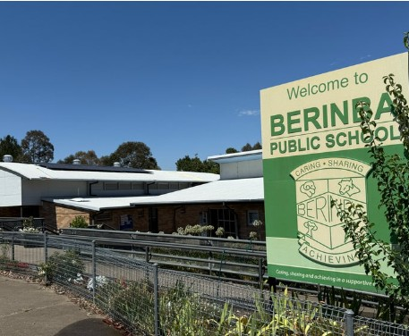
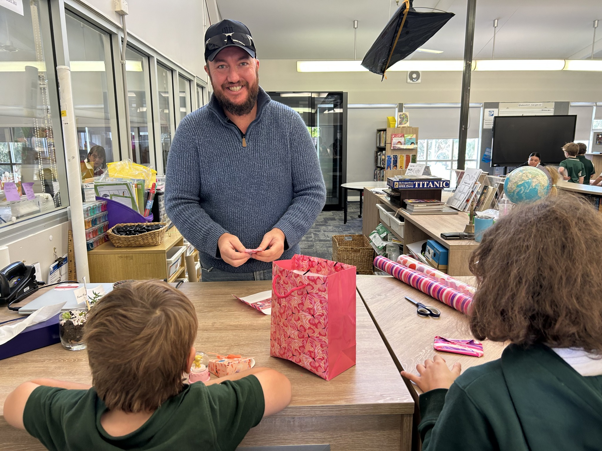
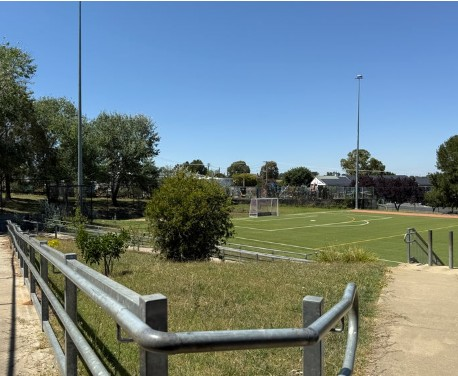
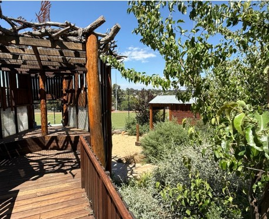
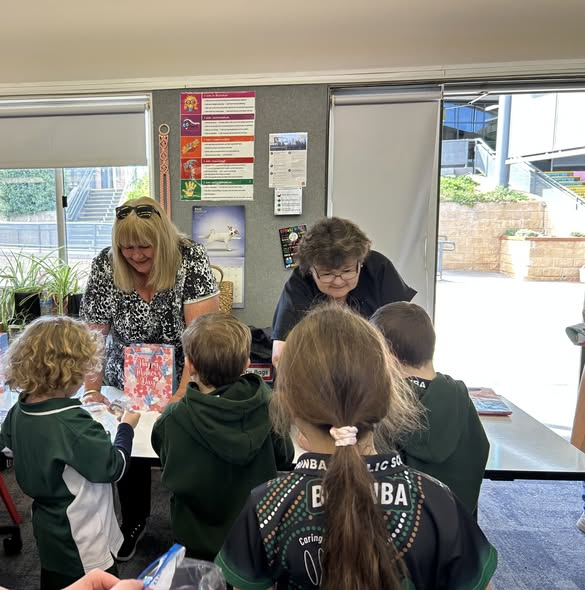

Quick Links
What are you looking for?
About Us
Welcome to Berinba P&C
The Berinba Public School Parents and Citizens Association is a volunteer organisation that works hand-in-hand with school staff to enrich the educational experience of every student.
From fundraising and events to running the canteen and uniform shop, our P&C is the heartbeat of the Berinba community. We welcome all parents, carers, and community members to get involved.
Meet Your P&C Committee📅 Next P&C Meeting
Tuesday, 21 April 2026
7:00pm · Staff Room
All parents and community members are warmly welcome.
What's On
Upcoming Events
Stay up to date with everything happening at Berinba.
P&C General Meeting Meeting
Monthly meeting open to all parents and carers.
MANGO Stall Fundraiser
Students can purchase a gift for their Mother, Aunt, Nanna, Grandmother or other special person. Gifts are wrapped and ready to take home.
Inaugural Golf Day Fundraiser
Our major Term 2 fundraiser! Come along and try your hand at golf, there will be snacks, drinks, assistance and plenty of laughs.
Our School
Life at Berinba
Berinba Public School — nestled in the beautiful Yass Valley, NSW.





